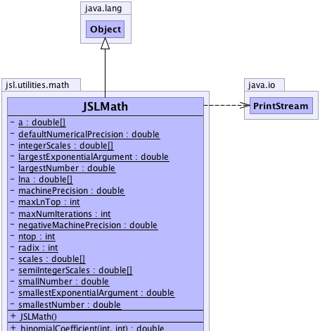

jsl.utilities.math.JSLMath
jsl.utilities.math.JSLMath
|
||||||||||
| PREV CLASS NEXT CLASS | FRAMES NO FRAMES | |||||||||
| SUMMARY: NESTED | FIELD | CONSTR | METHOD | DETAIL: FIELD | CONSTR | METHOD | |||||||||
java.lang.Object
public final class JSLMath
This class implements additional mathematical functions and determines the parameters of the floating point representation. This is based on the DhbMath class of Didier Besset in "Object-Oriented Implementation of Numerical Methods", Morgan-Kaufmann
|  |
| Field Summary | |
|---|---|
private static double[] |
a
holds initial factorials |
private static double |
defaultNumericalPrecision
Typical meaningful precision for numerical calculations. |
private static double[] |
integerScales
|
private static double |
largestExponentialArgument
Largest argument for the exponential |
private static double |
largestNumber
Largest possible number |
private static double[] |
lna
|
private static double |
machinePrecision
Largest positive value which, when added to 1.0, yields 0. |
private static int |
maxLnTop
|
private static int |
maxNumIterations
A constant that can be used in algorithms to specify the maximum number of iterations. |
private static double |
negativeMachinePrecision
Largest positive value which, when subtracted to 1.0, yields 0. |
private static int |
ntop
|
private static int |
radix
Radix used by floating-point numbers. |
private static double[] |
scales
Values used to compute human readable scales. |
private static double[] |
semiIntegerScales
|
private static double |
smallestExponentialArgument
Smallest argument for the exponential |
private static double |
smallestNumber
Smallest number different from zero. |
private static double |
smallNumber
Typical meaningful small number for numerical calculations. |
| Constructor Summary | |
|---|---|
JSLMath()
|
|
| Method Summary | |
|---|---|
static double |
binomialCoefficient(int n,
int k)
Computes the binomial coefficient. |
private static void |
computeLargestNumber()
|
private static void |
computeMachinePrecision()
|
private static void |
computeNegativeMachinePrecision()
|
private static void |
computeRadix()
|
private static void |
computeSmallestNumber()
|
static boolean |
equal(double a,
double b)
Compares two numbers a and b and checks if they are within the default numerical precision of each other. |
static boolean |
equal(double a,
double b,
double precision)
Compares two numbers a and b and checks if they are within the supplied precision of each other. |
static double |
factorial(int n)
Returns the factorial (n!) |
static double |
getDefaultNumericalPrecision()
Gets the default numerical precision. |
static double |
getLargestExponentialArgument()
Computes the largest exponent argument |
static double |
getLargestNumber()
Gets the largest positive number that can be represented |
static double |
getMachinePrecision()
Gets the largest positive number than when added to 1 yields 1 |
static int |
getMaxNumIterations()
Gets the default maximum number of iterations A constant that can be used in algorithms to specify the maximum number of iterations. |
static double |
getNegativeMachinePrecision()
Gets the largest positive number that when subtracted from 1 yield 1 |
static int |
getRadix()
Gets the radix of the floating point representation |
static double |
getSmallestExponentialArgument()
Computes the smallest exponent argument |
static double |
getSmallestNumber()
Gets the smallest positive number different from 0.0 |
static double |
getSmallNumber()
Returns the number that can be added to some value without noticeably changing the result of the computation |
static double |
logFactorial(int n)
Computes the natural logarithm of the factorial operator. |
static void |
printParameters(java.io.PrintStream printStream)
Computes and prints the mathematical precision parameters to the supplied PrintStream |
static void |
reset()
Resets the constants. |
static double |
roundTo(double value,
double scale)
This method returns the specified value rounded to the nearest integer multiple of the specified scale. |
static double |
roundToScale(double value,
boolean integerValued)
Round the specified value upward to the next scale value. |
static void |
setMaxNumIterations(int iterations)
Sets the default maximum number of iterations A constant that can be used in algorithms to specify the maximum number of iterations. |
static double |
sign(double x)
Get the sign of the number based on the equal() method Equal is 0.0, positive is 1.0, negative is -1.0 |
static boolean |
within(double a,
double b,
double precision)
Returns true if Math.abs(a-b) < precison |
| Methods inherited from class java.lang.Object |
|---|
clone, equals, finalize, getClass, hashCode, notify, notifyAll, toString, wait, wait, wait |
| Field Detail |
|---|
private static double[] a
private static int maxLnTop
private static double[] lna
private static int ntop
private static int maxNumIterations
private static double defaultNumericalPrecision
private static double smallNumber
private static int radix
private static double machinePrecision
private static double negativeMachinePrecision
private static double smallestNumber
private static double largestNumber
private static double largestExponentialArgument
private static double smallestExponentialArgument
private static final double[] scales
private static final double[] semiIntegerScales
private static final double[] integerScales
| Constructor Detail |
|---|
public JSLMath()
| Method Detail |
|---|
private static void computeLargestNumber()
private static void computeMachinePrecision()
private static void computeNegativeMachinePrecision()
private static void computeRadix()
private static void computeSmallestNumber()
public static final double getDefaultNumericalPrecision()
public static final int getMaxNumIterations()
public static final void setMaxNumIterations(int iterations)
iterations -
public static final boolean equal(double a,
double b)
a - doubleb - double
public static final boolean equal(double a,
double b,
double precision)
a - doubleb - doubleprecision - double
public static final boolean within(double a,
double b,
double precision)
a - b - precision -
public static final double getLargestExponentialArgument()
public static final double getSmallestExponentialArgument()
public static final double getLargestNumber()
public static final double getMachinePrecision()
public static final double getNegativeMachinePrecision()
public static final int getRadix()
public static final double getSmallestNumber()
public static final void printParameters(java.io.PrintStream printStream)
printStream - public static final void reset()
public static final double roundTo(double value,
double scale)
value - number to be roundedscale - defining the rounding scale
public static final double roundToScale(double value,
boolean integerValued)
the - value to be rounded.a - fag specified whether integer scale are used, otherwise double scale is used.
public static final double getSmallNumber()
public static final double sign(double x)
x -
public static final double factorial(int n)
n - The number to take the factorial of
public static final double binomialCoefficient(int n,
int k)
n - The total number of distinct itemsk - The number of subsets
public static final double logFactorial(int n)
n - The value to be operated on.
|
||||||||||
| PREV CLASS NEXT CLASS | FRAMES NO FRAMES | |||||||||
| SUMMARY: NESTED | FIELD | CONSTR | METHOD | DETAIL: FIELD | CONSTR | METHOD | |||||||||